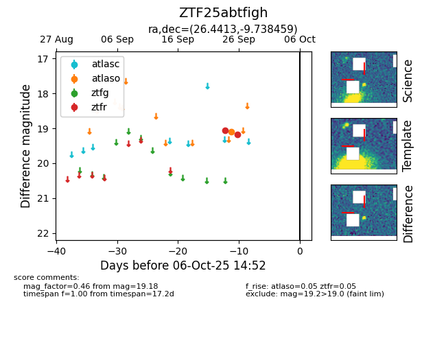

FINK: ZTF25abtfigh
Lasair: ZTF25abtfigh
ALeRCE: ZTF25abtfigh
ZTF25abtfigh (ztf,fink)
equatorial (ra, dec) = (26.4413,-9.73846)
galactic (l, b) = (161.8843,-68.39808)

last atlaso=19.11, ztfr=19.18
2 atlaso, 2 ztfr detections